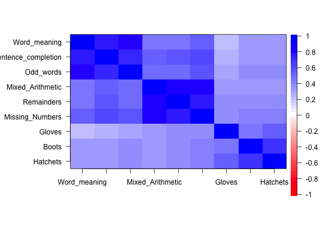
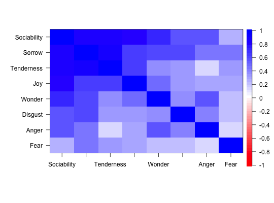

Two classic data sets reported by Harman (1967) are 9 psychological (cognitive) variables taken from Holzinger and 8 emotional variables taken from Burt. Both of these are used for tests and demonstrations of various factoring algortithms.
data(Harman)
Harman.Holzinger: 9 x 9 correlation matrix of ability tests, N = 696.
Harman.Burt: a 8 x 8 correlation matrix of ``emotional" items. N = 172
Harman.Holzinger. The nine psychological variables from Harman (1967, p 244) are taken from unpublished class notes of K.J. Holzinger with 696 participants. This is a subset of 12 tests with 4 factors. It is yet another nice example of a bifactor solution. Bentler (2007) uses this data set to discuss reliablity analysis. The data show a clear bifactor structure and are a nice example of the various estimates of reliability included in the omega function. Should not be confused with the Holzinger or Holzinger.9 data sets in bifactor.
Harman.Burt. Eight ``emotional" variables are taken from Harman (1967, p 164) who in turn adapted them from Burt (1939). They are said be from 172 normal children aged nine to twelve. As pointed out by Harman, this correlation matrix is singular and has squared multiple correlations > 1. Because of this problem, it is a nice test case for various factoring algorithms. (For instance, omega will issue warning messages for fm="minres" or fm="pa" but will fail for fm="ml".)
The Burt data set probably has a typo in the original correlation matrix. Changing the Sorrow- Tenderness correlation from .87 to .81 makes the correlation positive definite.
As pointed out by Jan DeLeeuw, the Burt data set is a subset of 8 variables from the original 11 reported by Burt in 1915. That matrix has the same problem. See burt.
Other example data sets that are useful demonstrations of factor analysis are the seven bifactor examples in Bechtoldt and the 24 ability measures in Harman74.cor
There are several other Harman examples in the psych package (i.e., Harman.8) as well as in the dataseta and GPArotation packages. The Harman 24 mental tests problem is in the basic datasets package at Harman74.cor.
Harman (1967 p 164 and p 244.)
Harman, Harry Horace (1967), Modern factor analysis. Chicago, University of Chicago Press.
P.Bentler. Covariance structure models for maximal reliability of unit-weighted composites. In Handbook of latent variable and related models, pages 1--17. North Holland, 2007.
Burt, C.General and Specific Factors underlying the Primary Emotions. Reports of the British Association for the Advancement of Science, 85th meeting, held in Manchester, September 7-11, 1915. London, John Murray, 1916, p. 694-696 (retrieved from the web at http://www.biodiversitylibrary.org/item/95822#790)
See also the original burt data set
cor.plot(Harman.Burt)#> Warning: Matrix was not positive definite, smoothing was done#> Sociability Sorrow Tenderness Joy Wonder Disgust #> 1.0000000 1.0000000 1.0000000 1.0000000 1.0000000 1.0000000 #> Anger Fear #> 1.0000000 0.9987481